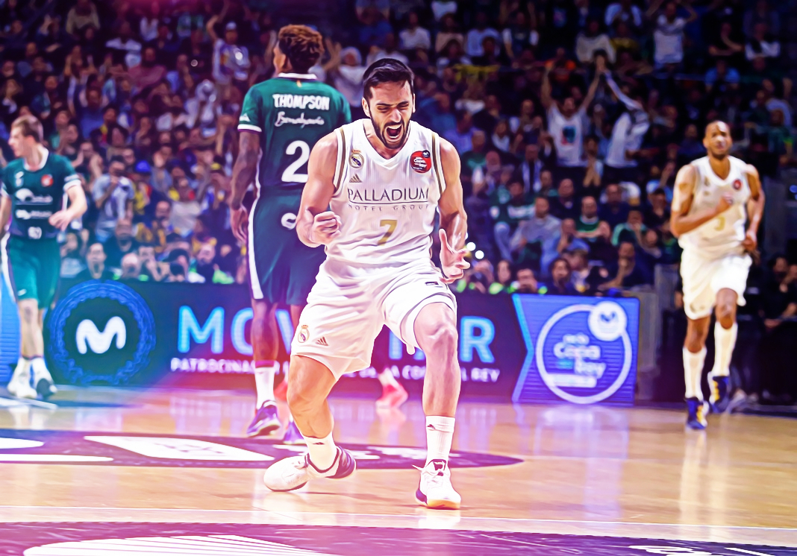

Las horas de Facundo Campazzo en el Real Madrid están contadas. Aunque todavía no hay nada oficial, el base argentino apura sus últimos partidos con la camiseta blanca. Y aunque algunos compañeros no quieran dar pistas sobre su futuro, lo cierto es que el porvenir del base cordobés tiene claro color NBA. Y así lo ha confirmado el representante del jugador en dos entrevistas radiofónicas concedidas en su país. Claudio Villanueva confirmó en Radio La Red lo que viene siendo un secreto a voces desde el pasado verano: "Facundo Campazzo va a jugar la próxima temporada en la NBA". Unas palabras que ponen fin a la etapa del argentino en el Real Madrid, que podría terminar de forma oficial el próximo 20 de noviembre ante el Fenerbahce, horas antes de que se abra el mercado de agentes libres en la NBA. Ahora sólo queda por despejar la incógnita del equipo en el que el todavía base del Real Madrid jugará la temporada que viene: "Tiene más chances de ir a la Conferencia Oeste y no es de los humildes. Sería hipócrita de mi parte decir que no tuvimos conversaciones. No pienso decir el equipo que está muy interesado en él. Hemos mantenido con tranquilidad el tema".
© Lucía Álvarez Núñez / CONTACTO